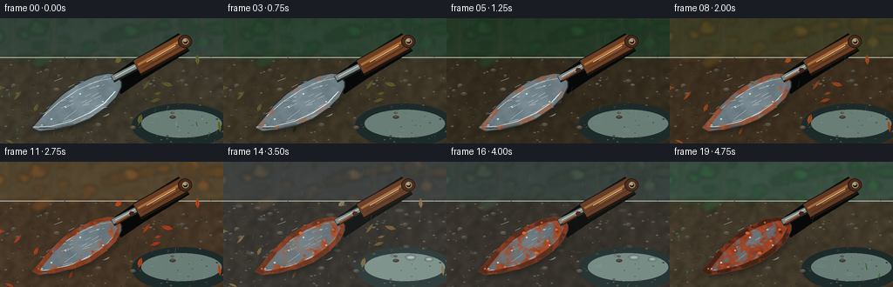
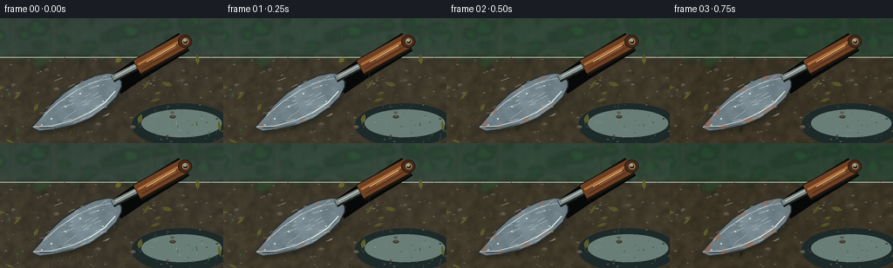

CODING AGENTS AS PIXEL WORLD MODELS
traex/GPT-5.6-Sol · material_0045
点击播放 · 原生 RGB 像素
逐轮保存的候选
回放视频、检查图与代码变化。
每份候选均可单独播放。实际图片检查记录在下方工具轨迹中。
候选 01播放与检查图
点击播放 · 原生 RGB 像素


展开代码变化
--- 上一保存版本
+++ 本次保存版本
@@ -0,0 +1,325 @@
+from pathlib import Path
+import math
+import numpy as np
+from PIL import Image, ImageDraw, ImageFilter
+import artifact_io
+
+# Deterministic, fully procedural timelapse renderer.
+W, H, N = 256, 144, 20
+S = 3
+w, h = W*S, H*S
+rng = np.random.default_rng(4517)
+
+# Helpers in logical (256x144) coordinates.
+def scpts(points):
+ return [(int(round(x*S)), int(round(y*S))) for x, y in points]
+
+def line(draw, points, fill, width, joint="curve"):
+ draw.line(scpts(points), fill=fill, width=max(1, int(width*S)), joint=joint)
+
+def ellipse(draw, box, fill, outline=None, width=1):
+ draw.ellipse(tuple(int(v*S) for v in box), fill=fill, outline=outline,
+ width=max(1, int(width*S)))
+
+def polygon(draw, points, fill):
+ draw.polygon(scpts(points), fill=fill)
+
+def interp_palette(p):
+ # Spring -> summer -> autumn -> winter -> new spring.
+ keys = [
+ (0.00, ((64,84,73), (70,64,49), (39,77,47))),
+ (0.25, ((48,79,55), (67,58,40), (29,73,39))),
+ (0.53, ((100,79,45), (78,57,37), (126,73,29))),
+ (0.76, ((78,86,88), (68,65,60), (74,76,69))),
+ (1.00, ((65,91,76), (70,61,45), (42,91,52))),
+ ]
+ for i in range(len(keys)-1):
+ if p <= keys[i+1][0]:
+ a, ca = keys[i]
+ b, cb = keys[i+1]
+ q = (p-a)/(b-a)
+ cols=[]
+ for c0,c1 in zip(ca,cb):
+ cols.append(tuple(int(c0[k]*(1-q)+c1[k]*q) for k in range(3)))
+ return cols
+ return list(keys[-1][1])
+
+def leaf_shape(cx, cy, length, width, angle):
+ ux, uy = math.cos(angle), math.sin(angle)
+ vx, vy = -uy, ux
+ # Tapered, slightly asymmetric 8 point leaf silhouette.
+ vals=[(-.52,0),(-.23,.42),(.14,.50),(.52,0),(.15,-.45),(-.24,-.34)]
+ return [(cx+ux*length*a+vx*width*b, cy+uy*length*a+vy*width*b) for a,b in vals]
+
+def add_leaf(draw, cx, cy, length, width, angle, color, vein=None):
+ pts=leaf_shape(cx,cy,length,width,angle)
+ polygon(draw,pts,color)
+ if vein:
+ ux,uy=math.cos(angle),math.sin(angle)
+ line(draw,[(cx-ux*length*.4,cy-uy*length*.4),(cx+ux*length*.4,cy+uy*length*.4)],vein,.45)
+
+# Stable background textures.
+yy, xx = np.mgrid[0:h, 0:w]
+X, Y = xx/S, yy/S
+coarse = rng.random((37,65))
+coarse_im = Image.fromarray(np.uint8(coarse*255)).resize((w,h), Image.Resampling.BICUBIC).filter(ImageFilter.GaussianBlur(2*S))
+coarse_field=np.asarray(coarse_im,dtype=float)/255.0
+fine_field=rng.random((h,w))
+
+# Stable soil objects.
+soil_specks=[]
+for _ in range(185):
+ x=float(rng.uniform(0,256)); y=float(rng.uniform(44,144))
+ r=float(rng.uniform(.25,1.5)); v=float(rng.uniform(-1,1))
+ soil_specks.append((x,y,r,v))
+pebbles=[]
+for _ in range(24):
+ pebbles.append((float(rng.uniform(2,252)),float(rng.uniform(54,140)),float(rng.uniform(1.2,3.8)),float(rng.uniform(.3,1))))
+
+# Blade silhouette, fixed to convey stable timelapse framing.
+blade_poly=[
+ (36,126),(45,116),(57,101),(73,86),(91,74),(109,66),
+ (124,63),(132,64),(139,73),(139,79),(133,91),(121,103),
+ (104,115),(84,123),(62,128),(45,130)
+]
+blade_mask=Image.new("L",(w,h),0)
+bm=ImageDraw.Draw(blade_mask)
+bm.polygon(scpts(blade_poly),fill=255)
+# soften only subpixel edge
+blade_mask=blade_mask.filter(ImageFilter.GaussianBlur(.25*S))
+blade_a=np.asarray(blade_mask,dtype=float)/255.0
+
+# Corrosion susceptibility field: metal edges + smooth random field + localized oxidation blooms.
+blur_noise=np.asarray(Image.fromarray(np.uint8(rng.random((18,32))*255)).resize((w,h),Image.Resampling.BICUBIC).filter(ImageFilter.GaussianBlur(2*S)),dtype=float)/255
+mid_noise=np.asarray(Image.fromarray(np.uint8(rng.random((55,91))*255)).resize((w,h),Image.Resampling.BICUBIC),dtype=float)/255
+# Approximate edge susceptibility by eroding the blade mask.
+eroded=np.asarray(blade_mask.filter(ImageFilter.MinFilter(25)),dtype=float)/255.0
+edge=np.clip(blade_a-eroded,0,1)
+spots=np.zeros((h,w),dtype=float)
+for cx,cy,sx,sy,amp in [
+ (43,123,11,7,1.0),(66,121,13,8,.88),(85,83,10,12,.74),(111,70,12,7,.9),
+ (127,78,7,10,1.0),(103,105,15,11,.78),(74,98,8,12,.63),(117,92,8,9,.72),
+ (91,116,7,5,.77),(56,107,6,8,.8)
+]:
+ spots += amp*np.exp(-(((X-cx)/sx)**2+((Y-cy)/sy)**2)*1.7)
+spots=np.clip(spots,0,1)
+rust_score=np.clip(.34*blur_noise+.18*mid_noise+.27*spots+.34*edge,0,1)
+# tiny pinprick seeds
+pin=np.zeros((h,w),dtype=float)
+for _ in range(85):
+ cx=float(rng.uniform(38,137)); cy=float(rng.uniform(63,129)); rr=float(rng.uniform(.25,1.25))
+ pin += np.exp(-((X-cx)**2+(Y-cy)**2)/(2*rr*rr))*float(rng.uniform(.4,1.0))
+rust_score=np.clip(rust_score+.16*np.clip(pin,0,1),0,1)
+
+# Fine scratch lines fixed on the blade.
+scratches=[]
+for _ in range(31):
+ x=float(rng.uniform(48,123)); y=float(rng.uniform(69,121)); ln=float(rng.uniform(3,18));
+ scratches.append((x,y,ln,float(rng.uniform(-.25,.25)),int(rng.uniform(55,120))))
+
+# Background foliage circles are stable but recolored seasonally.
+bokeh=[]
+for _ in range(56):
+ bokeh.append((float(rng.uniform(-8,264)),float(rng.uniform(2,53)),float(rng.uniform(2,11)),float(rng.random())))
+
+# Foreground leaves, with seasonal visibility.
+leaf_data=[]
+for _ in range(19):
+ leaf_data.append((float(rng.uniform(-8,264)),float(rng.uniform(47,145)),float(rng.uniform(5,13)),
+ float(rng.uniform(2.1,5.5)),float(rng.uniform(-math.pi,math.pi)),float(rng.random())))
+
+frames=[]
+for fi in range(N):
+ p=fi/(N-1)
+ skyc, soilc, plantc=interp_palette(p)
+ # A slow daylight pulse reads as passing months but never hides the subject.
+ daylight=.90+.10*math.sin(2*math.pi*(p*2.15)+.45)
+ bg=np.zeros((h,w,3),dtype=float)
+ # Defocused garden at top.
+ for c in range(3):
+ grad=skyc[c]*(.82+.22*(Y/144))+plantc[c]*(.10*coarse_field)
+ bg[:,:,c]=grad
+ # Wet soil below a soft horizon.
+ horizon=np.clip((Y-40)/8,0,1)
+ for c in range(3):
+ soil_val=soilc[c]*(.76+.34*coarse_field)+9*(fine_field-.5)
+ bg[:,:,c]=bg[:,:,c]*(1-horizon)+soil_val*horizon
+ bg*=daylight
+ bg=np.clip(bg,0,255).astype(np.uint8)
+ im=Image.fromarray(bg,"RGB")
+
+ # Defocused hedge / stems / fence in the distance.
+ far=Image.new("RGBA",(w,h),(0,0,0,0)); d=ImageDraw.Draw(far,"RGBA")
+ # old fence glimpses
+ for fx in [14,61,173,232]:
+ d.rectangle((int((fx-2)*S),0,int((fx+3)*S),int(48*S)),fill=(85,75,59,55))
+ d.rectangle((0,int(31*S),w,int(35*S)),fill=(67,62,52,42))
+ for bx,by,br,bv in bokeh:
+ season_dry=np.clip((p-.32)/.28,0,1)*np.clip((.82-p)/.18,0,1)
+ base=np.array(plantc,float)
+ if season_dry>0:
+ base=base*(1-season_dry*.48)+np.array([145,83,28])*season_dry*.48
+ col=tuple(np.clip(base*(.63+.55*bv),0,255).astype(int))+(int(80+55*bv),)
+ d.ellipse((int((bx-br)*S),int((by-br*.65)*S),int((bx+br)*S),int((by+br*.65)*S)),fill=col)
+ far=far.filter(ImageFilter.GaussianBlur(2.2*S))
+ im=Image.alpha_composite(im.convert("RGBA"),far)
+ d=ImageDraw.Draw(im,"RGBA")
+
+ # Shallow wet patches and subtle horizon reflection.
+ ellipse(d,(151,98,265,148),(29,42,42,72))
+ ellipse(d,(162,105,254,137),(105,126,119,21))
+ line(d,[(0,45),(256,45)],(184,191,178,32),1)
+
+ # Stones and granular earth remain fixed as seasons pass.
+ for sx,sy,sr,sv in soil_specks:
+ base=int(65+28*sv)
+ alpha=int(55+45*abs(sv))
+ ellipse(d,(sx-sr,sy-sr*.45,sx+sr,sy+sr*.45),(base+12,base+5,max(22,base-7),alpha))
+ for px,py,pr,pv in pebbles:
+ ellipse(d,(px-pr,py-pr*.55,px+pr,py+pr*.55),(50+int(40*pv),49+int(32*pv),42+int(28*pv),180))
+ line(d,[(px-pr*.45,py-pr*.2),(px+pr*.35,py-pr*.27)],(170,163,140,55),.6)
+
+ # Seasonal fallen leaves: green early, copper in autumn, nearly gone in winter.
+ autumn=np.clip((p-.29)/.18,0,1)*np.clip((.79-p)/.18,0,1)
+ early=.35*np.clip((.28-p)/.28,0,1)
+ leaf_vis=max(early,autumn)
+ for j,(lx,ly,ll,lw,la,lv) in enumerate(leaf_data):
+ vis=np.clip((leaf_vis*1.55-lv*.42),0,1)
+ if vis>.02:
+ col=(int(87+91*autumn+22*lv),int(87-35*autumn+24*lv),int(42-18*autumn),int(185*vis))
+ add_leaf(d,lx,ly,ll,lw,la,col,(56,47,28,int(110*vis)))
+
+ # Winter frost briefly appears, then melts into a new spring.
+ winter=np.clip((p-.64)/.10,0,1)*np.clip((.91-p)/.12,0,1)
+ if winter>0:
+ frost=Image.new("RGBA",(w,h),(0,0,0,0)); fd=ImageDraw.Draw(frost,"RGBA")
+ for k in range(38):
+ fx=(k*71%263)-3; fy=49+(k*47%93); rr=1.5+(k%5)*.9
+ fd.ellipse((int((fx-rr)*S),int((fy-rr*.4)*S),int((fx+rr)*S),int((fy+rr*.4)*S)),fill=(210,224,222,int(42*winter)))
+ frost=frost.filter(ImageFilter.GaussianBlur(.8*S))
+ im=Image.alpha_composite(im,frost); d=ImageDraw.Draw(im,"RGBA")
+
+ # Tool contact shadow and wet halo.
+ shadow=blade_mask.filter(ImageFilter.GaussianBlur(4.2*S))
+ sh=Image.new("RGBA",(w,h),(8,11,10,0)); sh.putalpha(shadow.point(lambda a:int(a*.48)))
+ shifted=Image.new("RGBA",(w,h),(0,0,0,0)); shifted.alpha_composite(sh,(2*S,3*S))
+ im=Image.alpha_composite(im,shifted)
+ d=ImageDraw.Draw(im,"RGBA")
+ line(d,[(132,77),(157,60),(211,27)],(6,9,8,110),24)
+
+ # Metallic blade base, with concave cross-blade reflections.
+ metal=np.zeros((h,w,4),dtype=np.uint8)
+ # Reflective band and longitudinal weathering.
+ refl=31*np.exp(-((X-(.58*Y+42))/14)**2)-18*np.exp(-((X-(.42*Y+58))/10)**2)
+ mnoise=(blur_noise-.5)*15+(mid_noise-.5)*8
+ base_light=124+refl+mnoise-13*p
+ metal[:,:,0]=np.clip(base_light*.89,0,255)
+ metal[:,:,1]=np.clip(base_light*.98+5,0,255)
+ metal[:,:,2]=np.clip(base_light+10,0,255)
+ metal[:,:,3]=np.uint8(blade_a*255)
+ im=Image.alpha_composite(im,Image.fromarray(metal,"RGBA"))
+ d=ImageDraw.Draw(im,"RGBA")
+ # Hard rim, rolled lip and subtle scoop ribs.
+ line(d,blade_poly+[blade_poly[0]],(41,48,46,220),1.4)
+ line(d,[(38,125),(59,124),(82,118),(102,109),(119,98),(132,84)],(226,238,229,130),1.0)
+ line(d,[(50,112),(68,96),(89,82),(111,72),(127,69)],(213,226,221,68),.8)
+ line(d,[(45,126),(64,126),(84,121)],(34,39,37,150),.8)
+ for x,y,ln,sl,val in scratches:
+ line(d,[(x,y),(x+ln*.8,y-ln*.38+sl*ln)],(225,236,230,val),.34)
+
+ # Oxidation grows monotonically. First orange edge blooms, then dark pits and flaking scale.
+ pe=max(0,(p-.025)/.975)
+ threshold=.86-.54*(pe**.78)
+ soft=np.clip((rust_score-threshold)/.14,0,1)*blade_a
+ tarnish=np.clip((rust_score-(threshold-.15))/.22,0,1)*blade_a*pe*.48
+ rust_alpha=np.clip(soft*(.25+.82*pe),0,1)
+ rust=np.zeros((h,w,4),dtype=np.uint8)
+ variation=np.clip(.56*blur_noise+.44*mid_noise,0,1)
+ rust[:,:,0]=np.clip(116+88*variation-18*pe,0,255)
+ rust[:,:,1]=np.clip(48+47*variation-15*pe,0,255)
+ rust[:,:,2]=np.clip(18+25*variation,0,255)
+ rust[:,:,3]=np.uint8(np.clip(tarnish+rust_alpha,0,1)*244)
+ im=Image.alpha_composite(im,Image.fromarray(rust,"RGBA"))
+ # Dark corrosion pits become numerous late in the sequence.
+ pits=np.clip((rust_score-(.76-.18*pe))/.12,0,1)*blade_a*np.clip((pe-.34)/.66,0,1)
+ pit_rgba=np.zeros((h,w,4),dtype=np.uint8)
+ pit_rgba[:,:,:3]=np.array([48,28,17],dtype=np.uint8)
+ pit_rgba[:,:,3]=np.uint8(pits*205)
+ im=Image.alpha_composite(im,Image.fromarray(pit_rgba,"RGBA"))
+ d=ImageDraw.Draw(im,"RGBA")
+ # Flaky raised highlights on strongest rust islands.
+ if pe>.35:
+ for k,(cx,cy) in enumerate([(44,123),(67,121),(89,82),(109,70),(126,78),(103,105),(77,98),(116,91)]):
+ q=np.clip((pe-(.34+k*.025))/.35,0,1)
+ if q>0:
+ rr=(1.0+(k%3)*.55)*q
+ ellipse(d,(cx-rr,cy-rr*.7,cx+rr,cy+rr*.7),(209,102,40,int(170*q)))
+ line(d,[(cx-rr*.5,cy-rr*.25),(cx+rr*.35,cy-rr*.35)],(242,145,64,int(135*q)),.45)
+
+ # Neck and tang sit over the blade.
+ line(d,[(129,70),(153,57),(164,52)],(28,34,33,220),9)
+ line(d,[(129,68.8),(154,55.8),(164,51)],(126,137,133,255),6.2)
+ line(d,[(132,67),(156,54)],(221,228,218,115),1.0)
+ # Rust creeps into the ferrule.
+ ferrule_r=np.clip((pe-.18)/.65,0,1)
+ if ferrule_r>0:
+ line(d,[(133,70),(147,62)],(147,63,27,int(180*ferrule_r)),2.1)
+ ellipse(d,(148,57,154,62),(71,35,20,int(170*ferrule_r)))
+
+ # Wooden handle, warm and recognizable, darkens from repeated wetting.
+ handle_dark=int(1+13*pe)
+ line(d,[(157,57),(211,27)],(28,21,15,235),21)
+ line(d,[(157,56),(211,26)],(112-handle_dark,65-handle_dark//2,35,255),17)
+ line(d,[(158,53.5),(210,24)],(179-handle_dark,112-handle_dark//2,57,145),3.2)
+ line(d,[(163,58),(207,33)],(69,38,24,115),1.1)
+ line(d,[(175,48),(201,33)],(218,145,76,70),.8)
+ # end cap / hanging hole
+ ellipse(d,(204,19,220,34),(74,42,26,255),(32,24,19,240),1)
+ ellipse(d,(209,23,216,30),(24,28,25,255),(190,154,99,150),1)
+ ellipse(d,(210,24,214,27),(153,164,143,75))
+
+ # Wet sheen and beads on both metal and handle.
+ wet=.55+.45*(.5+.5*math.sin(fi*1.31))
+ for j,(dx,dy,dr) in enumerate([(59,116,1.3),(75,102,.9),(92,87,1.2),(112,78,.75),(118,96,1.0),(48,123,.7)]):
+ pulse=.45+.55*math.sin(fi*.77+j*1.8)**2
+ ellipse(d,(dx-dr,dy-dr*.65,dx+dr,dy+dr*.65),(178,210,207,int(72*wet*pulse)))
+ ellipse(d,(dx-dr*.4,dy-dr*.5,dx,dy-dr*.1),(244,255,250,int(135*wet*pulse)))
+ line(d,[(168,50),(201,31)],(239,221,173,int(52*wet)),1)
+
+ # Foreground sprouts: disappear by winter and re-emerge in the final spring.
+ spring=max(np.clip((.18-p)/.18,0,1)*.7,np.clip((p-.83)/.17,0,1))
+ if spring>0:
+ for k,(sx,sy) in enumerate([(19,131),(226,124),(239,136),(11,91)]):
+ growth=spring*(.65+.35*((k*37)%9)/9)
+ line(d,[(sx,sy),(sx+(-1)**k*2*growth,sy-10*growth)],(43,91,48,int(210*growth)),1.0)
+ add_leaf(d,sx+(-1)**k*1.5*growth,sy-7*growth,4*growth,2*growth,-1.0 if k%2 else -2.1,(57,116,59,int(200*growth)))
+
+ # Rain layer: changing drops and concentric impacts establish continuous outdoor exposure.
+ rain=Image.new("RGBA",(w,h),(0,0,0,0)); rd=ImageDraw.Draw(rain,"RGBA")
+ intensity=.62+.30*math.sin(fi*.93+1.2)**2
+ nstreak=int(38+30*intensity)
+ rrng=np.random.default_rng(9000+fi)
+ for _ in range(nstreak):
+ rx=float(rrng.uniform(-5,261)); ry=float(rrng.uniform(-20,145)); ln=float(rrng.uniform(3,9))
+ alpha=int(rrng.uniform(25,80)*intensity)
+ rd.line(scpts([(rx,ry),(rx-1.5,ry+ln)]),fill=(190,218,224,alpha),width=max(1,int(rrng.uniform(.28,.62)*S)))
+ # Timed puddle impacts, with ellipse aspect implying ground plane.
+ for k in range(7):
+ phase=(fi*.71+k*.37)%1
+ rx=145+(k*29)%113; ry=103+(k*17)%38
+ rad=.6+phase*5.2
+ rd.ellipse((int((rx-rad)*S),int((ry-rad*.25)*S),int((rx+rad)*S),int((ry+rad*.25)*S)),outline=(175,207,207,int((1-phase)*82)),width=max(1,int(.45*S)))
+ rain=rain.filter(ImageFilter.GaussianBlur(.12*S))
+ im=Image.alpha_composite(im,rain)
+
+ # Slight damp atmospheric veil in the winter rains.
+ if winter>0:
+ veil=Image.new("RGBA",(w,h),(171,187,185,int(12*winter)))
+ im=Image.alpha_composite(im,veil)
+
+ out=im.convert("RGB").resize((W,H),Image.Resampling.LANCZOS)
+ frames.append(np.asarray(out,dtype=np.uint8))
+
+frames=np.stack(frames,axis=0)
+artifact_io.save(frames,Path(__file__).resolve().parent)
+print(f"saved {frames.shape} {frames.dtype}; mean={frames.mean():.2f}, temporal_delta={np.abs(np.diff(frames.astype(np.int16),axis=0)).mean():.2f}")
可观测工具轨迹
实际执行的命令与返回图片。
命令 1exit 0
/bin/bash -lc "cat prompt.txt && printf '\\n--- GENERATION_RULES ---\\n' && cat GENERATION_RULES.md && printf '\\n--- TASK_SPEC ---\\n' && cat task_spec.json"
命令 2exit 0
/bin/bash -lc "find . -maxdepth 3 -type f -printf '%p\\n' | sort | sed -n '1,240p'; printf '\\n--- tools ---\\n'; command -v ffmpeg || true; command -v python3 || true; command -v blender || true; command -v convert || true"
命令 3exit 0
/bin/bash -lc 'cat artifact_io.py'
命令 4exit 0
/bin/bash -lc "cat > generate.py <<'PY'
from pathlib import Path
import math
import numpy as np
from PIL import Image, ImageDraw, ImageFilter
import artifact_io
# Deterministic, fully procedural timelapse renderer.
W, H, N = 256, 144, 20
S = 3
w, h = W*S, H*S
rng = np.random.default_rng(4517)
# Helpers in logical (256x144) coordinates.
def scpts(points):
return [(int(round(x*S)), int(round(y*S))) for x, y in points]
def line(draw, points, fill, width, joint=\"curve\"):
draw.line(scpts(points), fill=fill, width=max(1, int(width*S)), joint=joint)
def ellipse(draw, box, fill, outline=None, width=1):
draw.ellipse(tuple(int(v*S) for v in box), fill=fill, outline=outline,
width=max(1, int(width*S)))
def polygon(draw, points, fill):
draw.polygon(scpts(points), fill=fill)
def interp_palette(p):
# Spring -> summer -> autumn -> winter -> new spring.
keys = [
(0.00, ((64,84,73), (70,64,49), (39,77,47))),
(0.25, ((48,79,55), (67,58,40), (29,73,39))),
(0.53, ((100,79,45), (78,57,37), (126,73,29))),
(0.76, ((78,86,88), (68,65,60), (74,76,69))),
(1.00, ((65,91,76), (70,61,45), (42,91,52))),
]
for i in range(len(keys)-1):
if p <= keys[i+1][0]:
a, ca = keys[i]
b, cb = keys[i+1]
q = (p-a)/(b-a)
cols=[]
for c0,c1 in zip(ca,cb):
cols.append(tuple(int(c0[k]*(1-q)+c1[k]*q) for k in range(3)))
return cols
return list(keys[-1][1])
def leaf_shape(cx, cy, length, width, angle):
ux, uy = math.cos(angle), math.sin(angle)
vx, vy = -uy, ux
# Tapered, slightly asymmetric 8 point leaf silhouette.
vals=[(-.52,0),(-.23,.42),(.14,.50),(.52,0),(.15,-.45),(-.24,-.34)]
return [(cx+ux*length*a+vx*width*b, cy+uy*length*a+vy*width*b) for a,b in vals]
def add_leaf(draw, cx, cy, length, width, angle, color, vein=None):
pts=leaf_shape(cx,cy,length,width,angle)
polygon(draw,pts,color)
if vein:
ux,uy=math.cos(angle),math.sin(angle)
line(draw,[(cx-ux*length*.4,cy-uy*length*.4),(cx+ux*length*.4,cy+uy*length*.4)],vein,.45)
# Stable background textures.
yy, xx = np.mgrid[0:h, 0:w]
X, Y = xx/S, yy/S
coarse = rng.random((37,65))
coarse_im = Image.fromarray(np.uint8(coarse*255)).resize((w,h), Image.Resampling.BICUBIC).filter(ImageFilter.GaussianBlur(2*S))
coarse_field=np.asarray(coarse_im,dtype=float)/255.0
fine_field=rng.random((h,w))
# Stable soil objects.
soil_specks=[]
for _ in range(185):
x=float(rng.uniform(0,256)); y=float(rng.uniform(44,144))
r=float(rng.uniform(.25,1.5)); v=float(rng.uniform(-1,1))
soil_specks.append((x,y,r,v))
pebbles=[]
for _ in range(24):
pebbles.append((float(rng.uniform(2,252)),float(rng.uniform(54,140)),float(rng.uniform(1.2,3.8)),float(rng.uniform(.3,1))))
# Blade silhouette, fixed to convey stable timelapse framing.
blade_poly=[
(36,126),(45,116),(57,101),(73,86),(91,74),(109,66),
(124,63),(132,64),(139,73),(139,79),(133,91),(121,103),
(104,115),(84,123),(62,128),(45,130)
]
blade_mask=Image.new(\"L\",(w,h),0)
bm=ImageDraw.Draw(blade_mask)
bm.polygon(scpts(blade_poly),fill=255)
# soften only subpixel edge
blade_mask=blade_mask.filter(ImageFilter.GaussianBlur(.25*S))
blade_a=np.asarray(blade_mask,dtype=float)/255.0
# Corrosion susceptibility field: metal edges + smooth random field + localized oxidation blooms.
blur_noise=np.asarray(Image.fromarray(np.uint8(rng.random((18,32))*255)).resize((w,h),Image.Resampling.BICUBIC).filter(ImageFilter.GaussianBlur(2*S)),dtype=float)/255
mid_noise=np.asarray(Image.fromarray(np.uint8(rng.random((55,91))*255)).resize((w,h),Image.Resampling.BICUBIC),dtype=float)/255
# Approximate edge susceptibility by eroding the blade mask.
eroded=np.asarray(blade_mask.filter(ImageFilter.MinFilter(25)),dtype=float)/255.0
edge=np.clip(blade_a-eroded,0,1)
spots=np.zeros((h,w),dtype=float)
for cx,cy,sx,sy,amp in [
(43,123,11,7,1.0),(66,121,13,8,.88),(85,83,10,12,.74),(111,70,12,7,.9),
(127,78,7,10,1.0),(103,105,15,11,.78),(74,98,8,12,.63),(117,92,8,9,.72),
(91,116,7,5,.77),(56,107,6,8,.8)
]:
spots += amp*np.exp(-(((X-cx)/sx)**2+((Y-cy)/sy)**2)*1.7)
spots=np.clip(spots,0,1)
rust_score=np.clip(.34*blur_noise+.18*mid_noise+.27*spots+.34*edge,0,1)
# tiny pinprick seeds
pin=np.zeros((h,w),dtype=float)
for _ in range(85):
cx=float(rng.uniform(38,137)); cy=float(rng.uniform(63,129)); rr=float(rng.uniform(.25,1.25))
pin += np.exp(-((X-cx)**2+(Y-cy)**2)/(2*rr*rr))*float(rng.uniform(.4,1.0))
rust_score=np.clip(rust_score+.16*np.clip(pin,0,1),0,1)
# Fine scratch lines fixed on the blade.
scratches=[]
for _ in range(31):
x=float(rng.uniform(48,123)); y=float(rng.uniform(69,121)); ln=float(rng.uniform(3,18));
scratches.append((x,y,ln,float(rng.uniform(-.25,.25)),int(rng.uniform(55,120))))
# Background foliage circles are stable but recolored seasonally.
bokeh=[]
for _ in range(56):
bokeh.append((float(rng.uniform(-8,264)),float(rng.uniform(2,53)),float(rng.uniform(2,11)),float(rng.random())))
# Foreground leaves, with seasonal visibility.
leaf_data=[]
for _ in range(19):
leaf_data.append((float(rng.uniform(-8,264)),float(rng.uniform(47,145)),float(rng.uniform(5,13)),
float(rng.uniform(2.1,5.5)),float(rng.uniform(-math.pi,math.pi)),float(rng.random())))
frames=[]
for fi in range(N):
p=fi/(N-1)
skyc, soilc, plantc=interp_palette(p)
# A slow daylight pulse reads as passing months but never hides the subject.
daylight=.90+.10*math.sin(2*math.pi*(p*2.15)+.45)
bg=np.zeros((h,w,3),dtype=float)
# Defocused garden at top.
for c in range(3):
grad=skyc[c]*(.82+.22*(Y/144))+plantc[c]*(.10*coarse_field)
bg[:,:,c]=grad
# Wet soil below a soft horizon.
horizon=np.clip((Y-40)/8,0,1)
for c in range(3):
soil_val=soilc[c]*(.76+.34*coarse_field)+9*(fine_field-.5)
bg[:,:,c]=bg[:,:,c]*(1-horizon)+soil_val*horizon
bg*=daylight
bg=np.clip(bg,0,255).astype(np.uint8)
im=Image.fromarray(bg,\"RGB\")
# Defocused hedge / stems / fence in the distance.
far=Image.new(\"RGBA\",(w,h),(0,0,0,0)); d=ImageDraw.Draw(far,\"RGBA\")
# old fence glimpses
for fx in [14,61,173,232]:
d.rectangle((int((fx-2)*S),0,int((fx+3)*S),int(48*S)),fill=(85,75,59,55))
d.rectangle((0,int(31*S),w,int(35*S)),fill=(67,62,52,42))
for bx,by,br,bv in bokeh:
season_dry=np.clip((p-.32)/.28,0,1)*np.clip((.82-p)/.18,0,1)
base=np.array(plantc,float)
if season_dry>0:
base=base*(1-season_dry*.48)+np.array([145,83,28])*season_dry*.48
col=tuple(np.clip(base*(.63+.55*bv),0,255).astype(int))+(int(80+55*bv),)
d.ellipse((int((bx-br)*S),int((by-br*.65)*S),int((bx+br)*S),int((by+br*.65)*S)),fill=col)
far=far.filter(ImageFilter.GaussianBlur(2.2*S))
im=Image.alpha_composite(im.convert(\"RGBA\"),far)
d=ImageDraw.Draw(im,\"RGBA\")
# Shallow wet patches and subtle horizon reflection.
ellipse(d,(151,98,265,148),(29,42,42,72))
ellipse(d,(162,105,254,137),(105,126,119,21))
line(d,[(0,45),(256,45)],(184,191,178,32),1)
# Stones and granular earth remain fixed as seasons pass.
for sx,sy,sr,sv in soil_specks:
base=int(65+28*sv)
alpha=int(55+45*abs(sv))
ellipse(d,(sx-sr,sy-sr*.45,sx+sr,sy+sr*.45),(base+12,base+5,max(22,base-7),alpha))
for px,py,pr,pv in pebbles:
ellipse(d,(px-pr,py-pr*.55,px+pr,py+pr*.55),(50+int(40*pv),49+int(32*pv),42+int(28*pv),180))
line(d,[(px-pr*.45,py-pr*.2),(px+pr*.35,py-pr*.27)],(170,163,140,55),.6)
# Seasonal fallen leaves: green early, copper in autumn, nearly gone in winter.
autumn=np.clip((p-.29)/.18,0,1)*np.clip((.79-p)/.18,0,1)
early=.35*np.clip((.28-p)/.28,0,1)
leaf_vis=max(early,autumn)
for j,(lx,ly,ll,lw,la,lv) in enumerate(leaf_data):
vis=np.clip((leaf_vis*1.55-lv*.42),0,1)
if vis>.02:
col=(int(87+91*autumn+22*lv),int(87-35*autumn+24*lv),int(42-18*autumn),int(185*vis))
add_leaf(d,lx,ly,ll,lw,la,col,(56,47,28,int(110*vis)))
# Winter frost briefly appears, then melts into a new spring.
winter=np.clip((p-.64)/.10,0,1)*np.clip((.91-p)/.12,0,1)
if winter>0:
frost=Image.new(\"RGBA\",(w,h),(0,0,0,0)); fd=ImageDraw.Draw(frost,\"RGBA\")
for k in range(38):
fx=(k*71%263)-3; fy=49+(k*47%93); rr=1.5+(k%5)*.9
fd.ellipse((int((fx-rr)*S),int((fy-rr*.4)*S),int((fx+rr)*S),int((fy+rr*.4)*S)),fill=(210,224,222,int(42*winter)))
frost=frost.filter(ImageFilter.GaussianBlur(.8*S))
im=Image.alpha_composite(im,frost); d=ImageDraw.Draw(im,\"RGBA\")
# Tool contact shadow and wet halo.
shadow=blade_mask.filter(ImageFilter.GaussianBlur(4.2*S))
sh=Image.new(\"RGBA\",(w,h),(8,11,10,0)); sh.putalpha(shadow.point(lambda a:int(a*.48)))
shifted=Image.new(\"RGBA\",(w,h),(0,0,0,0)); shifted.alpha_composite(sh,(2*S,3*S))
im=Image.alpha_composite(im,shifted)
d=ImageDraw.Draw(im,\"RGBA\")
line(d,[(132,77),(157,60),(211,27)],(6,9,8,110),24)
# Metallic blade base, with concave cross-blade reflections.
metal=np.zeros((h,w,4),dtype=np.uint8)
# Reflective band and longitudinal weathering.
refl=31*np.exp(-((X-(.58*Y+42))/14)**2)-18*np.exp(-((X-(.42*Y+58))/10)**2)
mnoise=(blur_noise-.5)*15+(mid_noise-.5)*8
base_light=124+refl+mnoise-13*p
metal[:,:,0]=np.clip(base_light*.89,0,255)
metal[:,:,1]=np.clip(base_light*.98+5,0,255)
metal[:,:,2]=np.clip(base_light+10,0,255)
metal[:,:,3]=np.uint8(blade_a*255)
im=Image.alpha_composite(im,Image.fromarray(metal,\"RGBA\"))
d=ImageDraw.Draw(im,\"RGBA\")
# Hard rim, rolled lip and subtle scoop ribs.
line(d,blade_poly+[blade_poly[0]],(41,48,46,220),1.4)
line(d,[(38,125),(59,124),(82,118),(102,109),(119,98),(132,84)],(226,238,229,130),1.0)
line(d,[(50,112),(68,96),(89,82),(111,72),(127,69)],(213,226,221,68),.8)
line(d,[(45,126),(64,126),(84,121)],(34,39,37,150),.8)
for x,y,ln,sl,val in scratches:
line(d,[(x,y),(x+ln*.8,y-ln*.38+sl*ln)],(225,236,230,val),.34)
# Oxidation grows monotonically. First orange edge blooms, then dark pits and flaking scale.
pe=max(0,(p-.025)/.975)
threshold=.86-.54*(pe**.78)
soft=np.clip((rust_score-threshold)/.14,0,1)*blade_a
tarnish=np.clip((rust_score-(threshold-.15))/.22,0,1)*blade_a*pe*.48
rust_alpha=np.clip(soft*(.25+.82*pe),0,1)
rust=np.zeros((h,w,4),dtype=np.uint8)
variation=np.clip(.56*blur_noise+.44*mid_noise,0,1)
rust[:,:,0]=np.clip(116+88*variation-18*pe,0,255)
rust[:,:,1]=np.clip(48+47*variation-15*pe,0,255)
rust[:,:,2]=np.clip(18+25*variation,0,255)
rust[:,:,3]=np.uint8(np.clip(tarnish+rust_alpha,0,1)*244)
im=Image.alpha_composite(im,Image.fromarray(rust,\"RGBA\"))
# Dark corrosion pits become numerous late in the sequence.
pits=np.clip((rust_score-(.76-.18*pe))/.12,0,1)*blade_a*np.clip((pe-.34)/.66,0,1)
pit_rgba=np.zeros((h,w,4),dtype=np.uint8)
pit_rgba[:,:,:3]=np.array([48,28,17],dtype=np.uint8)
pit_rgba[:,:,3]=np.uint8(pits*205)
im=Image.alpha_composite(im,Image.fromarray(pit_rgba,\"RGBA\"))
d=ImageDraw.Draw(im,\"RGBA\")
# Flaky raised highlights on strongest rust islands.
if pe>.35:
for k,(cx,cy) in enumerate([(44,123),(67,121),(89,82),(109,70),(126,78),(103,105),(77,98),(116,91)]):
q=np.clip((pe-(.34+k*.025))/.35,0,1)
if q>0:
rr=(1.0+(k%3)*.55)*q
ellipse(d,(cx-rr,cy-rr*.7,cx+rr,cy+rr*.7),(209,102,40,int(170*q)))
line(d,[(cx-rr*.5,cy-rr*.25),(cx+rr*.35,cy-rr*.35)],(242,145,64,int(135*q)),.45)
# Neck and tang sit over the blade.
line(d,[(129,70),(153,57),(164,52)],(28,34,33,220),9)
line(d,[(129,68.8),(154,55.8),(164,51)],(126,137,133,255),6.2)
line(d,[(132,67),(156,54)],(221,228,218,115),1.0)
# Rust creeps into the ferrule.
ferrule_r=np.clip((pe-.18)/.65,0,1)
if ferrule_r>0:
line(d,[(133,70),(147,62)],(147,63,27,int(180*ferrule_r)),2.1)
ellipse(d,(148,57,154,62),(71,35,20,int(170*ferrule_r)))
# Wooden handle, warm and recognizable, darkens from repeated wetting.
handle_dark=int(1+13*pe)
line(d,[(157,57),(211,27)],(28,21,15,235),21)
line(d,[(157,56),(211,26)],(112-handle_dark,65-handle_dark//2,35,255),17)
line(d,[(158,53.5),(210,24)],(179-handle_dark,112-handle_dark//2,57,145),3.2)
line(d,[(163,58),(207,33)],(69,38,24,115),1.1)
line(d,[(175,48),(201,33)],(218,145,76,70),.8)
# end cap / hanging hole
ellipse(d,(204,19,220,34),(74,42,26,255),(32,24,19,240),1)
ellipse(d,(209,23,216,30),(24,28,25,255),(190,154,99,150),1)
ellipse(d,(210,24,214,27),(153,164,143,75))
# Wet sheen and beads on both metal and handle.
wet=.55+.45*(.5+.5*math.sin(fi*1.31))
for j,(dx,dy,dr) in enumerate([(59,116,1.3),(75,102,.9),(92,87,1.2),(112,78,.75),(118,96,1.0),(48,123,.7)]):
pulse=.45+.55*math.sin(fi*.77+j*1.8)**2
ellipse(d,(dx-dr,dy-dr*.65,dx+dr,dy+dr*.65),(178,210,207,int(72*wet*pulse)))
ellipse(d,(dx-dr*.4,dy-dr*.5,dx,dy-dr*.1),(244,255,250,int(135*wet*pulse)))
line(d,[(168,50),(201,31)],(239,221,173,int(52*wet)),1)
# Foreground sprouts: disappear by winter and re-emerge in the final spring.
spring=max(np.clip((.18-p)/.18,0,1)*.7,np.clip((p-.83)/.17,0,1))
if spring>0:
for k,(sx,sy) in enumerate([(19,131),(226,124),(239,136),(11,91)]):
growth=spring*(.65+.35*((k*37)%9)/9)
line(d,[(sx,sy),(sx+(-1)**k*2*growth,sy-10*growth)],(43,91,48,int(210*growth)),1.0)
add_leaf(d,sx+(-1)**k*1.5*growth,sy-7*growth,4*growth,2*growth,-1.0 if k%2 else -2.1,(57,116,59,int(200*growth)))
# Rain layer: changing drops and concentric impacts establish continuous outdoor exposure.
rain=Image.new(\"RGBA\",(w,h),(0,0,0,0)); rd=ImageDraw.Draw(rain,\"RGBA\")
intensity=.62+.30*math.sin(fi*.93+1.2)**2
nstreak=int(38+30*intensity)
rrng=np.random.default_rng(9000+fi)
for _ in range(nstreak):
rx=float(rrng.uniform(-5,261)); ry=float(rrng.uniform(-20,145)); ln=float(rrng.uniform(3,9))
alpha=int(rrng.uniform(25,80)*intensity)
rd.line(scpts([(rx,ry),(rx-1.5,ry+ln)]),fill=(190,218,224,alpha),width=max(1,int(rrng.uniform(.28,.62)*S)))
# Timed puddle impacts, with ellipse aspect implying ground plane.
for k in range(7):
phase=(fi*.71+k*.37)%1
rx=145+(k*29)%113; ry=103+(k*17)%38
rad=.6+phase*5.2
rd.ellipse((int((rx-rad)*S),int((ry-rad*.25)*S),int((rx+rad)*S),int((ry+rad*.25)*S)),outline=(175,207,207,int((1-phase)*82)),width=max(1,int(.45*S)))
rain=rain.filter(ImageFilter.GaussianBlur(.12*S))
im=Image.alpha_composite(im,rain)
# Slight damp atmospheric veil in the winter rains.
if winter>0:
veil=Image.new(\"RGBA\",(w,h),(171,187,185,int(12*winter)))
im=Image.alpha_composite(im,veil)
out=im.convert(\"RGB\").resize((W,H),Image.Resampling.LANCZOS)
frames.append(np.asarray(out,dtype=np.uint8))
frames=np.stack(frames,axis=0)
artifact_io.save(frames,Path(__file__).resolve().parent)
print(f\"saved {frames.shape} {frames.dtype}; mean={frames.mean():.2f}, temporal_delta={np.abs(np.diff(frames.astype(np.int16),axis=0)).mean():.2f}\")
PY
python3 generate.py
python3 - <<'PY'
import numpy as np
from PIL import Image
z=np.load('pixels.npz')['pixels']
print('pixels',z.shape,z.dtype,'unique first',len(np.unique(z[:,:,0])),'unique last',len(np.unique(z[:,:,-1])))
print('files',Image.open('frames/00.png').size,Image.open('frames/19.png').mode)
# Compare frame differences and check no duplicated or blank frames.
f=np.stack([np.asarray(Image.open(f'frames/{i:02d}.png')).astype(np.int16) for i in range(20)])
print('means',np.round(f.mean((1,2,3)),1).tolist())
print('adjacent MAD',np.round(np.abs(np.diff(f,axis=0)).mean((1,2,3)),2).tolist())
PY"命令 5exit 0
/bin/bash -lc 'python3 -m py_compile generate.py artifact_io.py && test -s pixels.npz && test -s index.html && test -s inspection.png && test -s transition_check.png && test "$(find frames -maxdepth 1 -name '"'*.png' | wc -l)\" -eq 20 && echo 'artifact validation: PASS' && du -h pixels.npz index.html inspection.png transition_check.png && find frames -maxdepth 1 -name '*.png' -printf '%f %s bytes\\n' | sort | head -3 && find frames -maxdepth 1 -name '*.png' -printf '%f %s bytes\\n' | sort | tail -3"
命令 6exit 0
/bin/bash -lc "python3 - <<'PY'
from PIL import Image,ImageDraw
import numpy as np
S=1
poly=[(36,126),(45,116),(57,101),(73,86),(91,74),(109,66),(124,63),(132,64),(139,73),(139,79),(133,91),(121,103),(104,115),(84,123),(62,128),(45,130)]
m=Image.new('L',(256,144)); ImageDraw.Draw(m).polygon(poly,fill=255)
m=np.asarray(m)>0
for i in [0,4,8,12,16,19]:
a=np.asarray(Image.open(f'frames/{i:02d}.png'))
r,g,b=a[...,0],a[...,1],a[...,2]
orange=m&(r>g*1.38)&(r>b*1.8)&(r>75)
dark=m&(r<80)&(g<60)&(b<50)
metallic=m&(np.abs(r.astype(int)-g.astype(int))<22)&(b>=r*.83)
print(i,'orange rust %',round(100*orange.sum()/m.sum(),1),'dark pit %',round(100*dark.sum()/m.sum(),1),'metallic %',round(100*metallic.sum()/m.sum(),1))
PY"保存候选 1 份；完成命令 6 次；可验证图片返回 0 张。原始 API 响应与完整日志保留在本地。